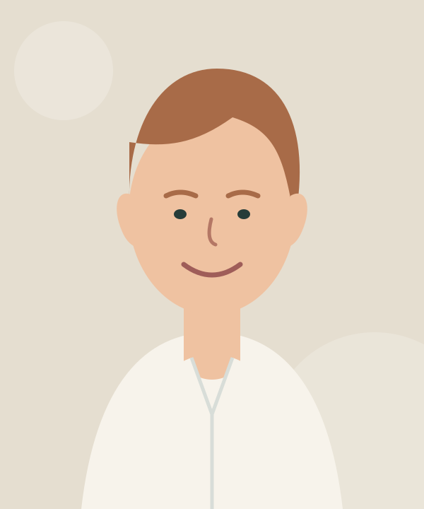
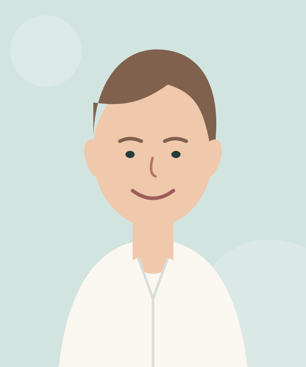

Allgemeinmedizin
Hausärztliche Versorgung in Münster
Medizin, die zuhört.
Persönlich begleitet, verständlich erklärt und verlässlich für Sie da – in jeder Lebensphase.
✓ Akutsprechstunde✓ Barrierearme Praxis✓ Digitale Patienteninfos
◷
AkutsprechstundeTäglich 08:00–09:00 Uhr
⌖
Fiktive DemoanschriftLindenbogen 18 · 48147 Münster
☎
Praxisempfang0251 000 00 00
Menschen in der Praxis
Ein Team. Viele Perspektiven.
Ärztliche Erfahrung, qualifizierte Assistenz und gute Organisation greifen bei uns ineinander.
Ärztliches Team Diagnostik · Therapie · Vorsorge
Innere Medizin
Dr. med. Jonas Lübbel
Internistische Diagnostik & Chronikerbetreuung
Allgemeinmedizin
Dr. med. Marie Köhlmann
Prävention, Vorsorge & ImpfmedizinPraxisorganisation & medizinische Assistenz Begleitung · Diagnostik · Koordination
Praxismanagement
Nina Hartmann
Leitende MFA · QualitätsmanagementVersorgungsassistenz
Selin Aydin
MFA · VERAH/NäPA
Funktionsdiagnostik
Leonie Bergmann
MFA · Labor & ImpfmanagementAlle Namen und Porträts sind fiktive, illustrative Darstellungen dieses Demoprojekts.
Leistungsspektrum
Hausärztlich gut versorgt.
Welche Untersuchung im Einzelfall sinnvoll ist, klären wir im persönlichen Gespräch.
Akute Beschwerden, Beratung, Befundbesprechung und koordinierte Weiterbehandlung.
Gesundheitsuntersuchungen, Hautkrebsscreening und individuelle Präventionsberatung.
Labor, Ruhe- und Langzeit-EKG, Langzeitblutdruck, Lungenfunktion und Ultraschall.
Impfstatuskontrolle, Standard- und Indikationsimpfungen sowie Reiseberatung.
DMP und kontinuierliche Begleitung unter anderem bei Diabetes, KHK, Asthma und COPD.
Verbandswechsel, kleine chirurgische Versorgung und postoperative Kontrollen.
Basisassessment und Hausbesuche nach medizinischer Indikation.
Erste Einordnung körperlicher und seelischer Wechselwirkungen.
Jugendarbeitsschutzuntersuchungen, Verordnungen, Überweisungen und ausgewählte Atteste.
Leistungsumfang und Kostenübernahme richten sich nach medizinischer Indikation und Versicherungsstatus. Reisemedizin und bestimmte Atteste können Selbstzahlerleistungen sein.
Sprechzeiten
Wir nehmen uns Zeit.
Bitte vereinbaren Sie möglichst vorab einen Termin. Akute Beschwerden werden täglich gesondert eingeplant.
Montag08–12 · 14–18 Uhr
Dienstag08–12 · 14–18 Uhr
Mittwoch08–13 Uhr
Donnerstag08–12 · 14–18 Uhr
Freitag08–13 Uhr
Akutsprechstunde täglich 08:00–09:00 Uhr
Kontakt & Anfahrt
So erreichen Sie uns.
Alle Angaben sind fiktiv und nicht für eine echte Kontaktaufnahme vorgesehen.
☎
Telefon0251 000 00 00
✉E-Mail · keine medizinischen Dateninfo@praxis-rlk.example
⌖
Fiktive AnschriftLindenbogen 18
48147 Münster
Für medizinische Einrichtungen
Direkter Draht für Fachpersonal.
Befunde gehören in sichere Kommunikationswege – nicht in eine gewöhnliche E-Mail.